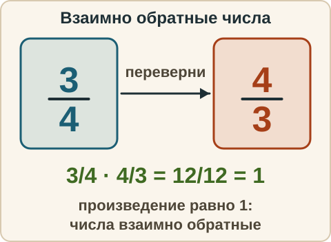
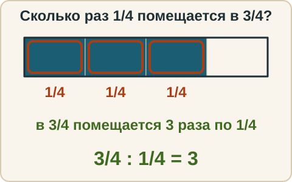
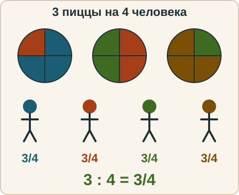
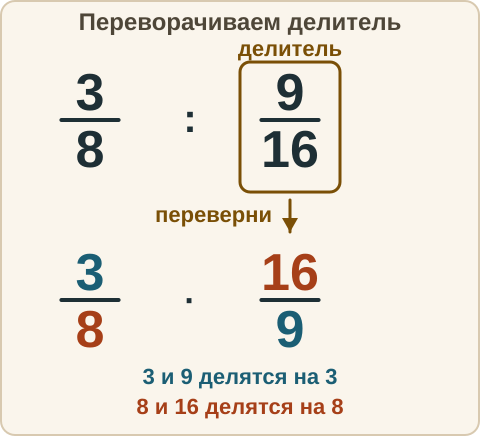

Математика: база · занятие 8Деление дробей
Цель: ты находишь число, обратное данному, делишь дробь на дробь, на целое число и целое число на дробь, делишь смешанные числа и записываешь деление целых чисел дробью. Ответы и подсказки спрятаны: сначала реши сам, потом нажми кнопку.
Как записывать ответ. Число — целое число. Дробь — через черту и сокращённая до конца, например 3/4. Неправильную дробь тоже можно записать через черту, например 9/4. Смешанное число — целая часть, пробел, дробь, например 2 3/4. Знак — один символ: <, > или =.
Вспомнить
Без подсказок, сразу проверка. Отмечай, на чём споткнулся, — в журнал.
- 3/8 · 4/9
- Найди 5/12 от 60.
- 1 1/2 · 2/3
- Знак: 3/5 и 5/8.
- Найди НОЗ чисел 9 и 12.
- 25 − 3 · (4 + 2)
Беглость: переверни
Игра «переверни». Назови число, которое при умножении на данное даёт 1. Для смешанного числа сначала переведи его в неправильную дробь. Проверка: перемножь — получится 1? Ошибся — попробуй ещё раз. Без таймера.
- Число, обратное 2/3.
- Число, обратное 4/9.
- Число, обратное 1/7.
- Число, обратное 1 1/2.
- Число, обратное 7/10.
- Число, обратное 5.
Правило
Взаимно обратные числа. Два числа взаимно обратные, если их произведение равно 1. Для дроби a/b обратная — b/a. Здесь a — числитель, b — знаменатель, оба не ноль. Целое число N обратно 1/N, потому что N · 1/N = 1. У нуля обратного числа нет: ничто на ноль не умножится и не даст 1.

Правило деления. Разделить на дробь — значит умножить на обратную ей: (a/b) : (c/d) = (a/b) · (d/c). Здесь a/b — делимое (то, что делим), c/d — делитель (то, на что делим). Переворачиваем делитель, знак деления меняем на умножение. Область применимости: делитель не равен нулю (c ≠ 0).
Почему так. Спрашиваем: сколько раз 1/4 помещается в 3/4? Три раза. По правилу: 3/4 : 1/4 = 3/4 · 4/1 = 3.
Из жизни. Налили 3/4 л сока, раздаём стаканами по 1/4 л. Получится 3/4 л : 1/4 л = 3 стакана (единицы разделились, стаканы посчитаны числом).

Дробь как деление. Дробная черта — знак деления: a/b = a : b. Поэтому деление двух целых можно записать дробью: 3 : 4 = 3/4, 21 : 6 = 21/6 = 7/2 = 3 1/2. Смысл: 3 пиццы поделили на 4 человека, каждому по 3/4 пиццы.

Смешанные числа. Сначала переводим в неправильные дроби (занятие 4), потом делим по правилу.
Разобранный пример
А. 2/3 : 4/5
- Делитель 4/5. Обратная ему 5/4.
- 2/3 · 5/4 = 10/12 = 5/6.
- Ответ: 5/6.
Б. 2 1/4 : 1 1/2
- Переводим: 2 1/4 = 9/4, 1 1/2 = 3/2.
- 9/4 : 3/2 = 9/4 · 2/3. Сокращаем: 9 и 3 на 3, 2 и 4 на 2: (3 · 1)/(2 · 1) = 3/2.
- 3/2 = 1 1/2. Ответ: 1 1/2.
С подсказкой
Решай сам. Подсказку открывай, только если застрял.
- 3/8 : 9/16

Сам
Результат сокращай до конца, а если нужно, выдели целую часть. Два раза не сошлось — появится кнопка «Показать решение».
- 5/6 : 5/12
- 4/7 : 8/21
- 6 : 3/4
- 3/5 : 6
- 1 1/3 : 2 2/3
- 15 : 6 — запиши ответ дробью и выдели целую часть.
Ловушка
Ловушка. Переворачивают не ту дробь: 2/3 : 4/5 = 3/2 · 4/5 = 6/5. Это неверно, перевернули делимое, а не делитель. Проверка: умножим ответ на делитель, должно получиться делимое. 6/5 · 4/5 = 24/25, а не 2/3. Или прикидкой: 2/3 меньше, чем 4/5, поэтому частное меньше 1, а 6/5 больше 1. Правильный ответ из примера А: 5/6. Проверь себя: переворачиваю ту дробь, НА которую делю.
Смесь
Вперемешку: деление, сложение, вычитание, умножение, знаки. Форму ответа подсказывает серый образец в поле.
- 7/8 : 7/4
- 2/5 + 1/3
- 9/10 · 5/6
- 4 : 2/5
- 5/6 − 1/4
- 2 1/2 : 1 1/4
- Найди 2/9 от 54 кг.
- −4 − 6
- Запиши 14 : 21 дробью и сократи.
Журнал
Запиши 1–3 строки: «что перепутал → как проверить». Пример формы: «перевернул первую дробь → переворачиваю ту, на которую делю, и проверяю умножением ответа на делитель».
- …